Cycles
New Normal Revival Symbol Gothic
There is Something beautifully ubiquitous, something post-colonial, decentralised, everlasting as the resin stacking chair. Synonymous with weddings, beaches, lunches, pool parties and dining tables.
Monobloc chairs embody many questions and contradictions posed by today’s consumer society. On the one hand, it is the epitome of an affordable—and thus democratic— piece of furniture. On the other, it is criticised for falling short of sustainability targets.
Invention of Tradition
Examining Revitalised Design Movements in Victorian and Contemporary Western Society
When Abbot Suger first implemented what was later to be known as Gothic Architecture in his redesign of the Basilica of St Denis in France in 1135, his decision to create a new style of church was a decidedly innovative and progressive one. A follower of Pseudo-Dionysius, Suger was fascinated in introducing light in as many ways as possible into the nave of the church, an effect that would allow God’s presence to be felt more vividly in the church. Engineering innovations, such as an expanded rose window, vaulted ceilings, towering windows, and flying buttresses were all developed to support these new ideas. The new Gothic style moved swiftly through Western Europe; the influx of foreing styles, such as the middle Eastern pointed arch, coupled with expanding economies and a prevalence of engineers in the region, allowed for the contemporary style to flourish as a standing achievement of god and his people. Gothic architecture, and its proliferation into other areas of life, such as furniture, was a space of experimentation and progress, evidenced by a range of advancements and explorations throughout Europe in the middle ages regarding this style, culminating in the animating and imposing Gothic Flaneur style.
This interpretation of Gothic is notably different to that of John Ruskin, whose text The Stones of Venice, notably his chapter on “The Nature of Gothic,” had widespread influences on European’s feelings towards the style. Depicting the Gothic as ‘savage,’ and handcrafted, Gothic design appeared more rudimental and natural in comparison to the prevalence of designed goods manufactured during the Industrial Revolution in Europe. Ruskin called for a return to the Gothic, a return to man-made objects that connected with craft and nature, values that directly opposed the widespread industrial products of his time. But was Gothic truly romantic and pastoral, or was it - like the Industrial Revolution - a period of innovation and change, producing a range of artifacts that proliferated through our material culture? The Strawberry Hills Chair chair, carved in 1441 (fig 1) was certainly handmade, but was its designer happy, like Ruskin argued?
Step 1: Innovation
Authentic Excitement
Tradition is used as scaffolding to ground a culture’s identity during times of change. The recollection (or formation) of tradition occurs more frequently under rapid transformations in society, or when a way of life feels threatened. Unstable social climates, such as industrialization in 19th century Britain, or the rapidly expanding 21st century digital age, threaten to destroy existing traditions. Because of this, new traditions are updated, or as Hobsbawm and Ranger would suggest, ‘invented,’ to resist the contemporary climate. During the Industrial Revolution, some people looked to historical examples of art and design as a way of trying to return to a romanticized moral home, a way of maintaining self-identity as the world changed. Through the practice of Gothic Revival design, the focus of craft in the Arts and Craft movement, and the role of textiles in the ideological competition between industrial manufacture and traditional techniques and motifs, it is clear that throughout the past 200 years of Western society, traditions are oftentimes invented or repurposed to create and anchor a group identity with a set of moral values that oppose large scale social change and progress. Tradition is used dually by traditionalists and progressive parties to accomplish their goals, with both groups appropriating and recontextualising historic ‘tradition’ to produce reception in audiences. It may even be suggested that by inventing traditions, the act of dislodging aesthetics from their original purpose and meaning, and applying new contexts, makes them more susceptible to appropriation and repurposing in industry, and furthermore weakens the original meaning of the style they pull from.
Step 2: Proliferation
Proliferation
working
Step 3: Tradition
Tradition
Tradition is used as scaffolding to ground a culture’s identity during times of change. The recollection (or formation) of tradition occurs more frequently under rapid transformations in society, or when a way of life feels threatened. Unstable social climates, such as industrialization in 19th century Britain, or the rapidly expanding 21st century digital age, threaten to destroy existing traditions. Because of this, new traditions are updated, or as Hobsbawm and Ranger would suggest, ‘invented,’ to resist the contemporary climate. During the Industrial Revolution, some people looked to historical examples of art and design as a way of trying to return to a romanticized moral home, a way of maintaining self-identity as the world changed. Through the practice of Gothic Revival design, the focus of craft in the Arts and Craft movement, and the role of textiles in the ideological competition between industrial manufacture and traditional techniques and motifs, it is clear that throughout the past 200 years of Western society, traditions are oftentimes invented or repurposed to create and anchor a group identity with a set of moral values that oppose large scale social change and progress. Tradition is used dually by traditionalists and progressive parties to accomplish their goals, with both groups appropriating and recontextualising historic ‘tradition’ to produce reception in audiences. It may even be suggested that by inventing traditions, the act of dislodging aesthetics from their original purpose and meaning, and applying new contexts, makes them more susceptible to appropriation and repurposing in industry, and furthermore weakens the original meaning of the style they pull from.
The phenomena of resurfacing and recontextualising old traditions is described by Hobsbawm and Ranger in their book The Invention of Tradition as ‘invented traditions.’ They argue that ‘invented traditions’ are often key drivers in the formation of nationalism and group identity. These new traditions draw on nostalgic feelings of identity as a way to create cohesion across a culture. A revitalisation of the Gothic as Design Reform and Gothic Revival, ushered in by design theories such as Ruskin, is one example of this. Hobsbawm and Ranger offer a framework to analyse ‘traditional’ design movements that sprung up as a result of the Industrial revolution. Traditions are resurfaced as a way or harking back to a ‘better,’ more morally good time. As Roland Barthes mentions in his essay on semiotics Rhetoric of the Image, connoted symbolic messages (eg. pastoral Gothic imagery harkening back to a ‘simpler,’ more conservative time) that leverage cultural contexts and understanding – a rhetoric – can effectively communicate and transport deep cultural ideas through imagery to a contemporary audience.

Proposals
Proposals
Design movements and traditions shape our understanding of history, but the way that they react to and reference each other also informs and retroactively shapes that said history. As we learned before, the life cycles of design are subjectively produced; different practitioners pick away at what suits their interests. How we form and shape a cycle has long term effects on how a history is viewed. By ignoring the actual lives of those suffering through famine and plague in Europe, designers such as Morris were able to formulate a Gothic of their own. This new gothic reoriented how H&M chose to tackle their own traditionally-inspired collection; the romantic imagery and nostalgia expressed by Morris served to form the ‘authentic’ reality that H&M contemporised. Retelling history is thus inherently biased, the danger arises when histories are uttered as truths and not interpretations. Skipping or altering a history can lead to different final interpretations. Linear and biased recollections of history don’t produce authentic forms. Perhaps authenticity isn’t an arrival or return to some moment of (non-existent) time, but an interconnection between different pasts as a way of describing both past and present. The authentic might be the objective summarisation of subjective renderings and readings of history.
To combat the subjective retelling of histories through design, I proposed an inquiry into an ‘objective,’ essence of the chair form, with the intent on producing a set of chairs that authentically told a story of the history of chair design. An innumerable number of design movements have evoked their values through the form of chairs. These styles, in communication with their predecessors and one another, ebb and flow over traditional and innovative practices, producing a variety of forms. The image of a chair may conjure up a variety of silhouettes and typologies. And yet, most of us would think of a seat, some legs, and possibly a back to the chair. What are these shared qualities, this essence of form, that binds disparate movements and artifacts together? How might we arrive at some sort of focal point or aggregate shape that is made up of a plethora of chairs that sit between the poles of tradition and innovation? Most cycles of design movements attempt to be authentic by holding true to the forms of their predecessors. In my proposed chairs, the shared intersections and similarities between disparate artifacts became the groundwork for my own attempts at achieving authenticity in the chair form. Projects such as FormNation’s ChairGenetics (fig 7) helped to frame my inquiry into the shared qualities of chairs through processes such as machine learning. Their research showed an inspiring use of technology to survey history; the implementation of contemporary technologies is not often used when recreating historic artifacts, where tools appropriate to the time period in question are often favoured. Whilst FormNation focussed on qualities such as ergonomics and price in chairs, my interest in looking historically at chairs was focussed more closely on symbolic style.
Fluidity of Authenticity
Authentic
Tradition is used as scaffolding to ground a culture’s identity during times of change. The recollection (or formation) of tradition occurs more frequently under rapid transformations in society, or when a way of life feels threatened. Unstable social climates, such as industrialization in 19th century Britain, or the rapidly expanding 21st century digital age, threaten to destroy existing traditions. Because of this, new traditions are updated, or as Hobsbawm and Ranger would suggest, ‘invented,’ to resist the contemporary climate. During the Industrial Revolution, some people looked to historical examples of art and design as a way of trying to return to a romanticized moral home, a way of maintaining self-identity as the world changed. Through the practice of Gothic Revival design, the focus of craft in the Arts and Craft movement, and the role of textiles in the ideological competition between industrial manufacture and traditional techniques and motifs, it is clear that throughout the past 200 years of Western society, traditions are oftentimes invented or repurposed to create and anchor a group identity with a set of moral values that oppose large scale social change and progress. Tradition is used dually by traditionalists and progressive parties to accomplish their goals, with both groups appropriating and recontextualising historic ‘tradition’ to produce reception in audiences. It may even be suggested that by inventing traditions, the act of dislodging aesthetics from their original purpose and meaning, and applying new contexts, makes them more susceptible to appropriation and repurposing in industry, and furthermore weakens the original meaning of the style they pull from.
Step 4: Abstraction
Subtitle
Tradition is used as scaffolding to ground a culture’s identity during times of change. The recollection (or formation) of tradition occurs more frequently under rapid transformations in society, or when a way of life feels threatened. Unstable social climates, such as industrialization in 19th century Britain, or the rapidly expanding 21st century digital age, threaten to destroy existing traditions. Because of this, new traditions are updated, or as Hobsbawm and Ranger would suggest, ‘invented,’ to resist the contemporary climate. During the Industrial Revolution, some people looked to historical examples of art and design as a way of trying to return to a romanticized moral home, a way of maintaining self-identity as the world changed. Through the practice of Gothic Revival design, the focus of craft in the Arts and Craft movement, and the role of textiles in the ideological competition between industrial manufacture and traditional techniques and motifs, it is clear that throughout the past 200 years of Western society, traditions are oftentimes invented or repurposed to create and anchor a group identity with a set of moral values that oppose large scale social change and progress. Tradition is used dually by traditionalists and progressive parties to accomplish their goals, with both groups appropriating and recontextualising historic ‘tradition’ to produce reception in audiences. It may even be suggested that by inventing traditions, the act of dislodging aesthetics from their original purpose and meaning, and applying new contexts, makes them more susceptible to appropriation and repurposing in industry, and furthermore weakens the original meaning of the style they pull from.
Irony and Ironic
Lost Indenties
Tradition is used as scaffolding to ground a culture’s identity during times of change. The recollection (or formation) of tradition occurs more frequently under rapid transformations in society, or when a way of life feels threatened. Unstable social climates, such as industrialization in 19th century Britain, or the rapidly expanding 21st century digital age, threaten to destroy existing traditions. Because of this, new traditions are updated, or as Hobsbawm and Ranger would suggest, ‘invented,’ to resist the contemporary climate. During the Industrial Revolution, some people looked to historical examples of art and design as a way of trying to return to a romanticized moral home, a way of maintaining self-identity as the world changed. Through the practice of Gothic Revival design, the focus of craft in the Arts and Craft movement, and the role of textiles in the ideological competition between industrial manufacture and traditional techniques and motifs, it is clear that throughout the past 200 years of Western society, traditions are oftentimes invented or repurposed to create and anchor a group identity with a set of moral values that oppose large scale social change and progress. Tradition is used dually by traditionalists and progressive parties to accomplish their goals, with both groups appropriating and recontextualising historic ‘tradition’ to produce reception in audiences. It may even be suggested that by inventing traditions, the act of dislodging aesthetics from their original purpose and meaning, and applying new contexts, makes them more susceptible to appropriation and repurposing in industry, and furthermore weakens the original meaning of the style they pull from.
Identity
Subtitle
Tradition is used as scaffolding to ground a culture’s identity during times of change. The recollection (or formation) of tradition occurs more frequently under rapid transformations in society, or when a way of life feels threatened. Unstable social climates, such as industrialization in 19th century Britain, or the rapidly expanding 21st century digital age, threaten to destroy existing traditions. Because of this, new traditions are updated, or as Hobsbawm and Ranger would suggest, ‘invented,’ to resist the contemporary climate. During the Industrial Revolution, some people looked to historical examples of art and design as a way of trying to return to a romanticized moral home, a way of maintaining self-identity as the world changed. Through the practice of Gothic Revival design, the focus of craft in the Arts and Craft movement, and the role of textiles in the ideological competition between industrial manufacture and traditional techniques and motifs, it is clear that throughout the past 200 years of Western society, traditions are oftentimes invented or repurposed to create and anchor a group identity with a set of moral values that oppose large scale social change and progress. Tradition is used dually by traditionalists and progressive parties to accomplish their goals, with both groups appropriating and recontextualising historic ‘tradition’ to produce reception in audiences. It may even be suggested that by inventing traditions, the act of dislodging aesthetics from their original purpose and meaning, and applying new contexts, makes them more susceptible to appropriation and repurposing in industry, and furthermore weakens the original meaning of the style they pull from.
Bias
Subtitle
Design movements and traditions shape our understanding of history, but the way that they react to and reference each other also informs and retroactively shapes that said history. As we learned before, the life cycles of design are subjectively produced; different practitioners pick away at what suits their interests. How we form and shape a cycle has long term effects on how a history is viewed. By ignoring the actual lives of those suffering through famine and plague in Europe, designers such as Morris were able to formulate a Gothic of their own. This new gothic reoriented how H&M chose to tackle their own traditionally-inspired collection; the romantic imagery and nostalgia expressed by Morris served to form the ‘authentic’ reality that H&M contemporised. Retelling history is thus inherently biased, the danger arises when histories are uttered as truths and not interpretations. Linear and biased recollections of history don’t produce authentic forms. Perhaps authenticity isn’t an arrival or return to some moment of (non-existent) time, but an interconnection between different pasts as a way of describing both past and present. The authentic might be the objective summarisation of subjective renderings and readings of history.
To combat the subjective retelling of histories through design, I proposed an inquiry into an ‘objective,’ essence of the chair form, with the intent on producing a set of chairs that authentically told a story of the history of chair design. An innumerable number of design movements have evoked their values through the form of chairs. These styles, in communication with their predecessors and one another, ebb and flow over traditional and innovative practices, producing a variety of forms. The image of a chair may conjure up a variety of silhouettes and typologies. And yet, most of us would think of a seat, some legs, and possibly a back to the chair. What are these shared qualities, this essence of form, that binds disparate movements and artifacts together? How might we arrive at some sort of focal point or aggregate shape that is made up of a plethora of chairs that sit between the poles of tradition and innovation? Most cycles of design movements attempt to be authentic by holding true to the forms of their predecessors. In my proposed chairs, the shared intersections and similarities between disparate artifacts became the groundwork for my own attempts at achieving authenticity in the chair form.
Objectivity
Subtitle
Tradition is used as scaffolding to ground a culture’s identity during times of change. The recollection (or formation) of tradition occurs more frequently under rapid transformations in society, or when a way of life feels threatened. Unstable social climates, such as industrialization in 19th century Britain, or the rapidly expanding 21st century digital age, threaten to destroy existing traditions. Because of this, new traditions are updated, or as Hobsbawm and Ranger would suggest, ‘invented,’ to resist the contemporary climate. During the Industrial Revolution, some people looked to historical examples of art and design as a way of trying to return to a romanticized moral home, a way of maintaining self-identity as the world changed. Through the practice of Gothic Revival design, the focus of craft in the Arts and Craft movement, and the role of textiles in the ideological competition between industrial manufacture and traditional techniques and motifs, it is clear that throughout the past 200 years of Western society, traditions are oftentimes invented or repurposed to create and anchor a group identity with a set of moral values that oppose large scale social change and progress. Tradition is used dually by traditionalists and progressive parties to accomplish their goals, with both groups appropriating and recontextualising historic ‘tradition’ to produce reception in audiences. It may even be suggested that by inventing traditions, the act of dislodging aesthetics from their original purpose and meaning, and applying new contexts, makes them more susceptible to appropriation and repurposing in industry, and furthermore weakens the original meaning of the style they pull from.
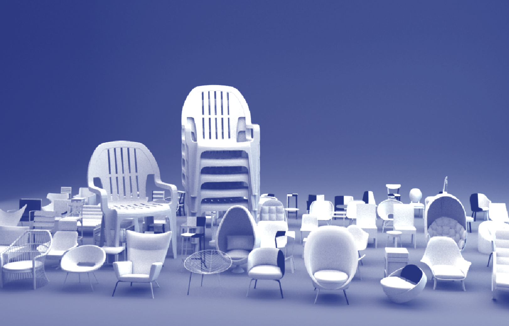Intersections
Aggregates
The various tensions between design styles, matched with the drifting signifier and diffusion or abstraction of ideas that are associated with these forms, spread in all directions. Yet these paths don’t exist in a vacuum, oftentimes the form of an object is a direct response to the form of another. The responses, differences, and similarities between products create a network and web, within this web is som essence of form, some shared history or genetic makeup. In my proposed chairs, my focus was centred around finding how we might navigate these various design movements and objects, using intersections and shared similarities as a framework for arriving at the ‘authentic,’ objective truth of chairs. The following is a short explanation of my process as a designer and the steps I took to create chairs that sat as aggregates of many different previous forms.
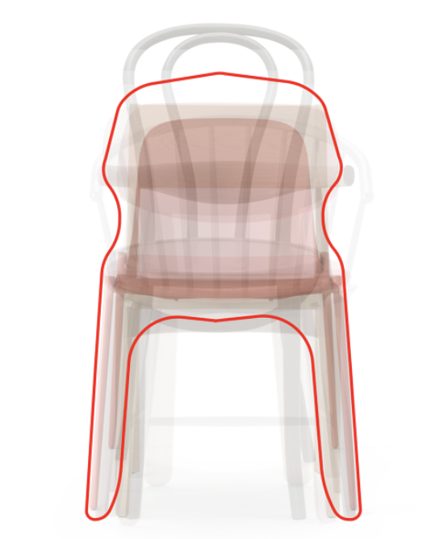My initial prototypes involved stacking chairs on top of one another. The goal of this exercise is to visualise how different chairs relate and contradict one another. Viewing this diagram, it is clear that most chairs have legs (support), a seat, and back (support). A silhouette becomes apparent, one that is pulled further from its central point by certain chairs that present larger volumes, yet there exists a strong gravity around certain aspects, such as legs, or a seating area. By stacking the existing chairs in certain ways, or by playing with the opacity of a chair based on its age, the influence of a chair on the final silhouette is adjusted. Despite aiming to be objective in my choices of chairs or how I laid them out, biases towards style, and the impacts of time (newer chairs are less opaque, making them more influential in the final form), still shaped the silhouette.
The introduction of the computer into the design process opened new avenues for combatting bias and arriving at a more ‘authentic’ final form. The design of a chair is different to its final silhouette or surface; early attempts at finding mediums between sets of objects made me realise that intricacies in design doesn’t necessarily correlate with the shape and form of a chair. By breaking down chairs into sets of volumetric pixels, or voxels, the overall volume of a chair could be maintained and compared with other objects through the use of 3-dimensional grids. Experiments in Processing, a code environment for learners and artists, allowed me to quickly prototype and workshop ideas.
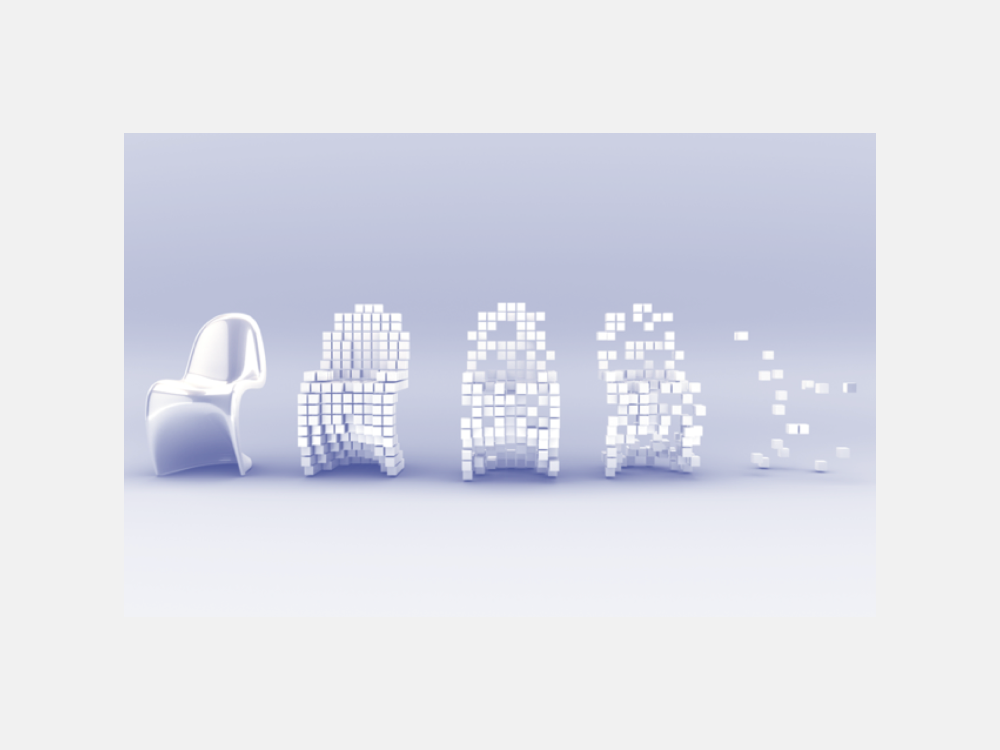The interpolation between forms through the use of voxels and randomness allowed me to create an ecosystem that could be populated by ‘pieces’ of chairs. This randomness could be weighted based off of factors such as time, the popularity of an object, or other parameters. Conceptually, I was interested in tracking through a history of chairs, as a way of seeing where we came from, and where we are going in chair design. The potential to illustrate and history and influences of chair genetics and style over time through a single chair became the goal of the final chairs I produced.
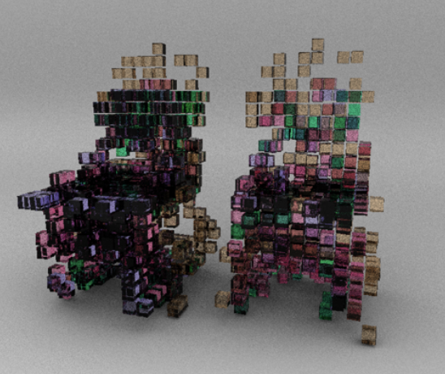By stacking a series of 3D chairs in a software called Maya, and reducing these chairs into voxel grids, I then randomly called a chair’s voxels based on their age. For example, each voxel of a chair from 1910 had around a 10% chance of being displayed. Voxel blocks of chairs from 2000, may have had a 60% chance of being rendered. The overlaps can be seen in the figure above, where more overlaps between chairs (or similarities in their forms) were rendered as darker shapes. A spatial fractal known as a Hilbert Curve was used to render these voxel intersections as physical, filled cubes, with the intention of using the line-like qualities of the fractal as a foundation for future 3D printing of these proposed chairs. Hilbert curves are spatial fractals that can become more complex in cubes, a perfect way of representing different levels of density. For example, if there was no overlap amongst chairs (eg only one chair produced a voxel at that specific part of the 3D field), the simplest, least dense Hilbert curve (n=1) would be called. As more overlaps and intersections occurred, a more dense fractal would be called. The result was a fascinating form that showed a density of different chairs, relationships and connections, but also was interesting in its own form. To see the final chairs, explore the objective section of the exhibition.
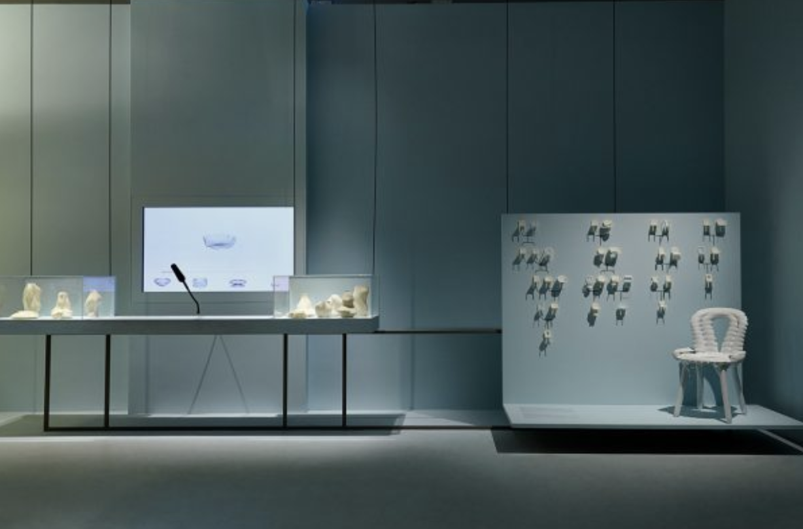
Essence
Essence of Change
The ubiquities of the plastic monobloc chair offers a dynamic way of viewing the nature of authenticity in design. The monobloc remains free of contexts and easily described meanings, it is ambiguous yet omnipresent. Despite this, it exists in our world, in our material culture. Perhaps it may transcend the cycles of style, and exist throughout time in its current form. But when examining objects such as the mason jar, even a static form can be fluid in its cultural meaning and significance. How will future generations view the monobloc? Will it become a symbol of the late 20th century expansion of globalisation, of disposable and plastic waste? Will restaurants that say “we do things different around here” ask customers to order expensive share plates whilst sitting on plastic injection-moulded chairs?
The future of the monobloc relies on how designers and consumers choose to contextualise an object that at this stage remains free. If we choose to prescribe the monobloc with specific meaning, we will direct its life cycle in a certain way, as design reformers shaped the future history of Gothic. Trying to say an object is something that it is not is the easiest way of degrading its history, and thus our own understanding of our present, past, and future. Tradition is used to ground a culture during times of great change and provide a guise of authenticity. But when traditions uproot histories, the replanting of our pasts are subject to erosion and decay. If we are to remain connected to our pasts (and I hope we do) we should do so carefully, paying respect to that that came before us, and refraining from trying to tell ourselves that that past said something it did not.
The monobloc is important - authentic - because of its lack of tangible importance and authenticity. But as we have seen, the maintenance of authenticity is impossible, and in fact this maintenance results in the diluted mess of histories that has marked movements such as Gothic revival. As authenticity and identity continue to become topics that dictate our lives, it is important to be critical of objects and movements that appropriate old or existing styles and prescribe new meanings to them. The true nature of authenticity is in the essence of change, to understand that our material culture is always evolving and rushing downstream. Whilst we should observe the river of our designed world, and respond to it, and even add to it, we can be better designers and consumers by not polluting it with false signifiers, or producing dams that divert flows and redraw maps of history. The springs and tributaries that feed our material culture should be preserved. The monobloc may change in due course, but its current state should not be forgotten.
The essence of change is the search for the authentic, it is clear that what this authentic might be is destined to remain unclear, and elusive.
Seeking Truths
Subtitle
Tradition is used as scaffolding to ground a culture’s identity during times of change. The recollection (or formation) of tradition occurs more frequently under rapid transformations in society, or when a way of life feels threatened. Unstable social climates, such as industrialization in 19th century Britain, or the rapidly expanding 21st century digital age, threaten to destroy existing traditions. Because of this, new traditions are updated, or as Hobsbawm and Ranger would suggest, ‘invented,’ to resist the contemporary climate. During the Industrial Revolution, some people looked to historical examples of art and design as a way of trying to return to a romanticized moral home, a way of maintaining self-identity as the world changed. Through the practice of Gothic Revival design, the focus of craft in the Arts and Craft movement, and the role of textiles in the ideological competition between industrial manufacture and traditional techniques and motifs, it is clear that throughout the past 200 years of Western society, traditions are oftentimes invented or repurposed to create and anchor a group identity with a set of moral values that oppose large scale social change and progress. Tradition is used dually by traditionalists and progressive parties to accomplish their goals, with both groups appropriating and recontextualising historic ‘tradition’ to produce reception in audiences. It may even be suggested that by inventing traditions, the act of dislodging aesthetics from their original purpose and meaning, and applying new contexts, makes them more susceptible to appropriation and repurposing in industry, and furthermore weakens the original meaning of the style they pull from.
Monobloc
Plastic
In the post-WWII-era, tastemakers such as MoMA played a leading role in the definition and dissemination of “good design,” a concept that continued to grow in the latter half of the 20th century. , “Is there art in a broomstick?” asked Time magazine in 1953; “Yes, says Manhattan's Museum of Modern Art, if it is designed both for usefulness and good looks.” . Chairs such as the Eames lounge and the Hans Wegner wishbone chair represented the modernist values of functionalism, simplicity, and truth to material values. Modernism represented a shift away from the overly-prevalent industrial objects of 19th century Britain, and also refrained from attaching new objects to historical connotations or references.
In an industry obsessed with modernist chairs, it is at first ironic to find that the most used and globally recognised chair is in fact the Monobloc, or the everyday white plastic chair. The monobloc emerges from a mist of sources, distilling the earlier explorations into plastic moulding from Verner Panton and Ray and Charles Eames, whilst simultaneously embracing the essence of Modernism’s infatuation with materiality. The monobloc is unabashedly plastic and functional. Yet the view that it is an example of “Good Design” remains spotty.
Synonymous
Un-Context
Understanding the Monobloc chair as an object birthed from innovation, it is easy to draw similarities between this chair and the gothic chairs or many other styles that have come to pass. Surely the monobloc will one day become an ornate artifact that symbolises some time lost? Nostalgia will draw it back into the fold, with new nuances and details that help to traditions it for an audience that is seeking to return to some lost identity? What will these futures look like?
But the monobloc also offers up another form of authentic truth: perhaps its ubiquity, its commonness, makes it timeless, omnipresent, and unchanging. Maybe the monobloc, unlike the computer-generated proposals that mix bias and objectivity in confusing and misguided ways, introduces an authenticity that can only be arrived at when an object is trying to not say anything at all. When studying the process of making an object traditional, and the abstract consequences that brings, it is clear that objects trying to say certain things, such as gothic lightness, allow these objects to be appropriated and changed.
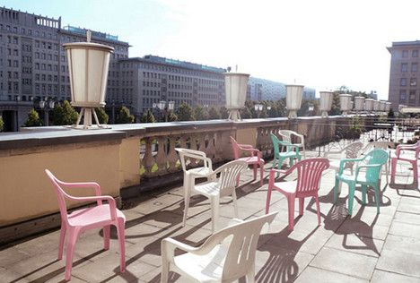Virtually every object suggests a time and place. The monobloc is one of the rare objects that remain free of these specific contexts, contexts that allow other styles and movements to offer rich opportunities for abstraction and appropriation by interested parties. Seeing an image of a white plastic chair offers no contexts for where someone may be. Even cars, fast food chains, and sodas implement regional nuances. The monobloc thus approaches a realm of decontextualised perfection. There is something beautifully ubiquitous, something post-colonial, decentralised, everlasting as the resin stacking chair. Synonymous with weddings, beaches, lunches, pool parties and dining tables.
With the monobloc’s source history being so diluted and lacking in grounding facts, and its equally decontextualised form, this chair offers a new perspective on authenticity. Whilst many design styles look to reference pasts and precedents for their objects and subsequent iterations, the monobloc remains authentic in its harmony between ergonomics, economic practicality, and - most importantly - its lack of contexts. People remain searching for some form of true representation of the self and of life. Perhaps authenticity can only be arrived at not through the intersection of shared ideas and pasts, but from the complete dismissal of them. It remains to be seen if this theory of authenticity holds true, or what the future holds for the monobloc.
Within a Cycle
Source of Ubiquity
The concept of making chairs from single pieces of materials has long been a goal for designers. In many ways, this desire to create a single extruded form, an arrival at a finality of design, where nuts and connective bolts are traded for an abbreviated essence of form, shares many relationships with the work completed during my research into objective proposals of what a final, or aggregate chair might look like. The goal of reducing fluff down to purely sublime function and connection between object and user is an enchanting concept that brings us intoxicatingly close to an essence or truth of form.
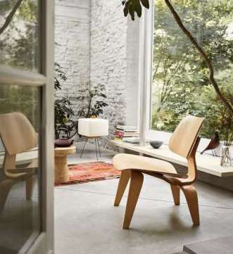Experiments date back to the early 20th century, mainly through the exploration of pressing sheet metals and bending laminated woods (a leading example being Eames’ bent ply LCW chair. After WWII, plastic became an increasingly exciting material that offered design freedom and low costs for post-war markets. The Organic Chair from Eero Saarinen and Charles Eames exploited these plastics but were, in reality, a fibreglass chair reinforced with metal legs. Saarinen’s desire for a “structural total” reflected prior desires to return to the rules of older furniture, which used single materials (such as wood) to produce a complete object.
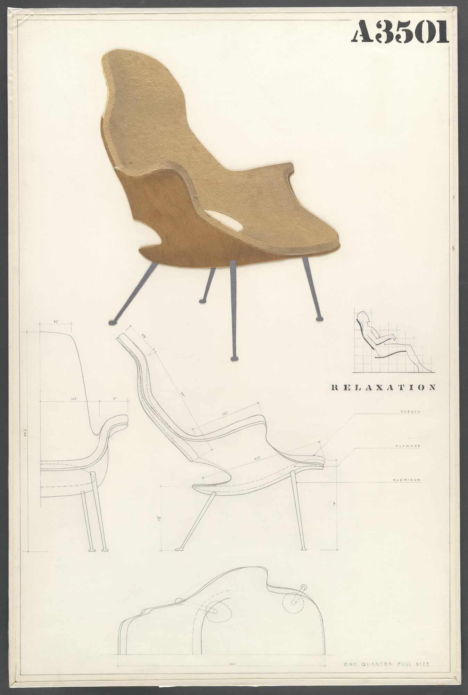Danish designer Verner Panton in 1968 finally produced the first single-form, single material, injection-moulded chair, (see top) in one of the defining moments of furniture design. The Panton chair remains an icon, but also a very high-design, even today. In 1972, French engineer Henry Massonnett reduced the injection-process time to a duration of 2 minutes through the use of polypropylene at STAMP (Société de Transformation des Matières Plastiques), a factory in France. The Fauteuil 300 remains one of the few early models that is cited as an archetype for the contemporary monobloc chair. The speed of manufacture coupled with the low cost of plastic, allowed for the proliferation of monoblocs we see today.
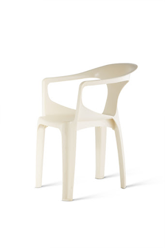Growth
The Expanse of Global Objects
On a higher part of the beach, a single patio chair of molded white plastic commanded a wide view. Someone might have put it there to enjoy a beer in, or for winter sunbathing. Then again, it might have been flotsam. I have seen this identical type of plastic chair in photos of the Lagos, Nigeria, city dumps in the Times. A photo of a memorial gathering for a slain Al Qaeda leader in Jordan showed a row of these same chairs in a tent. I own six of these chairs myself. I believe this type of white molded-plastic chair belongs to the growing category of the world’s ubiquitous objects.
- Ian Frazier.
I recall during an internship in Mumbai, my AirBnB host taking us to one of the local McDonalds in the glitzy Phoenix Mall. Sitting inside with our fries, my host showed me how to make their Tikka chips by pouring a cloud of flavoured dust and the fries into a paper bag. Shake and pour. The chips had a distinct Indian flavour, aromatic and spiced. McDonalds remains an icon of globalisation, yet wherever you go, their franchises implement local flairs.
The Monobloc remains unique, and in fact reminds us despite our cynical viewpoint towards the homogenising world, that in fact most objects and experiences still offer some form of context. This chair doesn’t require specific changes to remain successful in Latin America, the Pacific Northwest, Central Asia, of New Zealand. Neither must its design change to suit a poolside slab of concrete, a grassy wedding, a stoop, a roadside lunch. To dismiss the monobloc as inauthentic because it lacks a specific context ignore that its value, its true purpose, is in its ability to integrate into the lives of many without requiring it or it’s user to adjust.
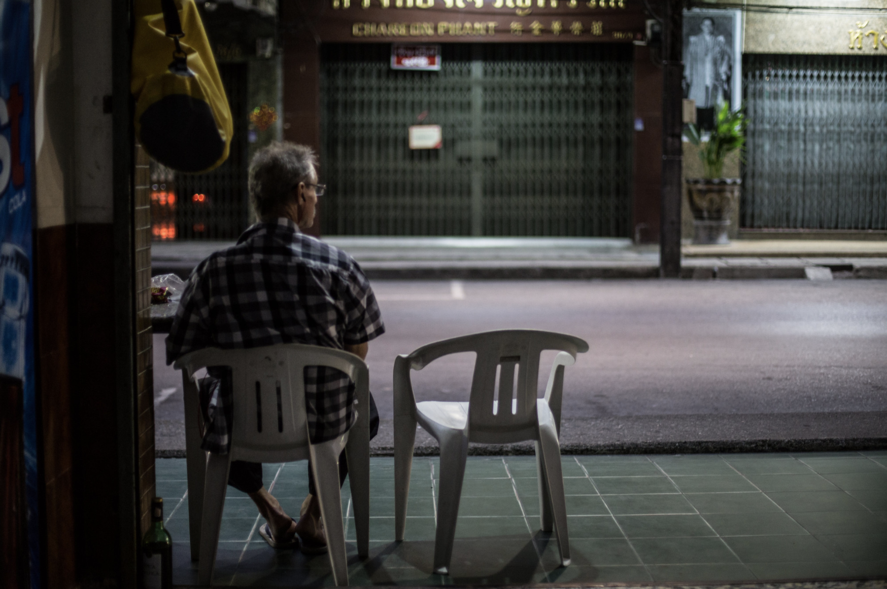Arguments around the introduction of western design to indigenous cultures return to the construct of authenticity. The authentic is braced to the notion of identity, that what is authentic to one isn’t just inauthentic to another; it is the state of its authenticity to a specific identity that thus produces it’s inauthenticity in another. And yet when searching the internet, travelling abroad, or going through the wonderful flickr group “Those White Plastic Chairs” It is clear that the monobloc remains an important part of societies outside of the West. It is thus from a position of privileged that the monobloc becomes an object that should be held away from indigenous cultures. Countries today produce their own monobloc chairs natively, and the plastic chairs have taken on specific and important roles in the lives of these people. The sharing of technologies back and forth across apparatuses such as The Silk Road has been common for centuries. Individuals should refrain from proclaiming that objects represent suppression of local material culture, and become more interested in how these objects of export are becoming re-engineered to suit the lives of those who have adopted it.
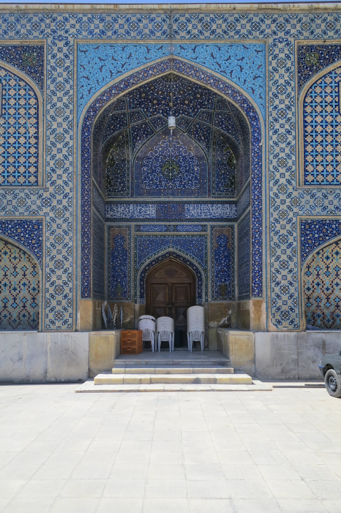
The transfer of objects cross-culturally expands our perspectives of the authentic as it relates to design and society. Like objects such as the Mason Jar, or Gothic Revival chairs allude to, motifs and forms can hold or shift over multiple meanings, depending on how a culture chooses to orient themselves to that object. What may be seen as disposable and affordable in one part of the world, may represent a different kind of statement in another. The monobloc defies localisation; it’s form is able to remain stable as its meaning and importance fluidly shifts as it moves across time and space.
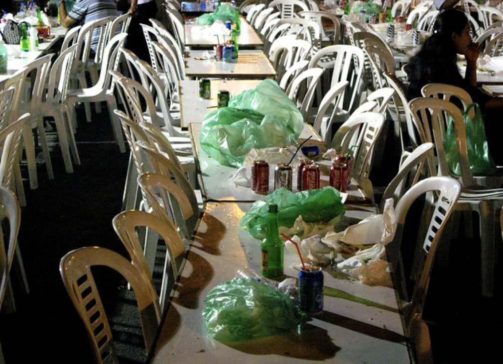
Futures
Subtitle
Tradition is used as scaffolding to ground a culture’s identity during times of change. The recollection (or formation) of tradition occurs more frequently under rapid transformations in society, or when a way of life feels threatened. Unstable social climates, such as industrialization in 19th century Britain, or the rapidly expanding 21st century digital age, threaten to destroy existing traditions. Because of this, new traditions are updated, or as Hobsbawm and Ranger would suggest, ‘invented,’ to resist the contemporary climate. During the Industrial Revolution, some people looked to historical examples of art and design as a way of trying to return to a romanticized moral home, a way of maintaining self-identity as the world changed. Through the practice of Gothic Revival design, the focus of craft in the Arts and Craft movement, and the role of textiles in the ideological competition between industrial manufacture and traditional techniques and motifs, it is clear that throughout the past 200 years of Western society, traditions are oftentimes invented or repurposed to create and anchor a group identity with a set of moral values that oppose large scale social change and progress. Tradition is used dually by traditionalists and progressive parties to accomplish their goals, with both groups appropriating and recontextualising historic ‘tradition’ to produce reception in audiences. It may even be suggested that by inventing traditions, the act of dislodging aesthetics from their original purpose and meaning, and applying new contexts, makes them more susceptible to appropriation and repurposing in industry, and furthermore weakens the original meaning of the style they pull from.
Change
Essence of Change
The ubiquities of the plastic monobloc chair offers a dynamic way of viewing the nature of authenticity in design. The monobloc remains free of contexts and easily described meanings, it is ambiguous yet omnipresent. Despite this, it exists in our world, in our material culture. Perhaps it may transcend the cycles of style, and exist throughout time in its current form. But when examining objects such as the mason jar, even a static form can be fluid in its cultural meaning and significance. How will future generations view the monobloc? Will it become a symbol of the late 20th century expansion of globalisation, of disposable and plastic waste? Will restaurants that say “we do things different around here” ask customers to order expensive share plates whilst sitting on plastic injection-moulded chairs?
The future of the monobloc relies on how designers and consumers choose to contextualise an object that at this stage remains free. If we choose to prescribe the monobloc with specific meaning, we will direct its life cycle in a certain way, as design reformers shaped the future history of Gothic. Trying to say an object is something that it is not is the easiest way of degrading its history, and thus our own understanding of our present, past, and future. Tradition is used to ground a culture during times of great change and provide a guise of authenticity. But when traditions uproot histories, the replanting of our pasts are subject to erosion and decay. If we are to remain connected to our pasts (and I hope we do) we should do so carefully, paying respect to that that came before us, and refraining from trying to tell ourselves that that past said something it did not.
The monobloc is important - authentic - because of its lack of tangible importance and authenticity. But as we have seen, the maintenance of authenticity is impossible, and in fact this maintenance results in the diluted mess of histories that has marked movements such as Gothic revival. As authenticity and identity continue to become topics that dictate our lives, it is important to be critical of objects and movements that appropriate old or existing styles and prescribe new meanings to them. The true nature of authenticity is in the essence of change, to understand that our material culture is always evolving and rushing downstream. Whilst we should observe the river of our designed world, and respond to it, and even add to it, we can be better designers and consumers by not polluting it with false signifiers, or producing dams that divert flows and redraw maps of history. The springs and tributaries that feed our material culture should be preserved. The monobloc may change in due course, but its current state should not be forgotten.
The essence of change is the search for the authentic, it is clear that what this authentic might be is destined to remain unclear, and elusive.